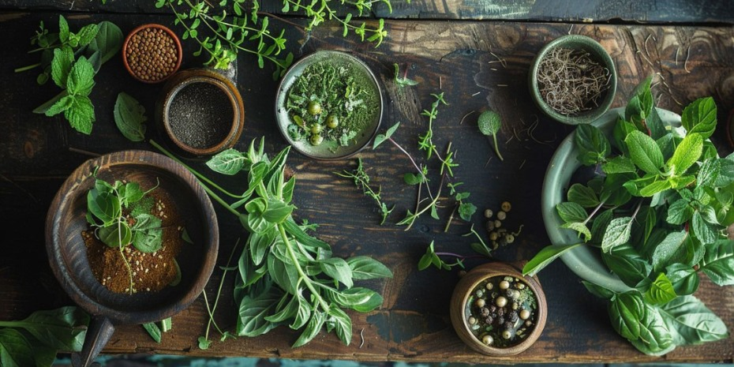

Dato Curioso de la Semana

Avances recientes en fitoterapia: el poder de los hongos medicinales y el conocimiento ancestral
Recientemente, la fitoterapia ha registrado avances significativos con nuevos descubrimientos. Por ejemplo, el uso de hongos medicinales como el chaga (Inonotus obliquus) ha mostrado efectos positivos en el tratamiento de trastornos inflamatorios como la artritis, gracias a sus propiedades antiinflamatorias y moduladoras del sistema inmunitario.Además, investigaciones han revelado que la planta Ephedra, utilizada en Marruecos desde hace 15.000 años, se empleaba para tratar hemorragias y dolores, lo que demuestra el extenso conocimiento ancestral sobre el uso de plantas medicinales. Estos hallazgos subrayan el potencial de la fitoterapia como una alternativa natural y eficaz a los tratamientos convencionales.